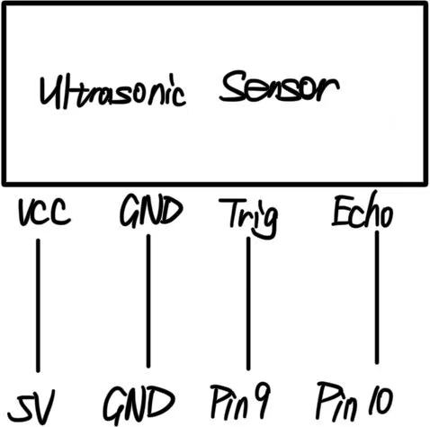
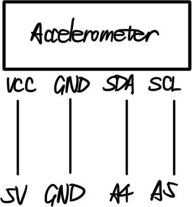

Erzhen's Assignment 6!
Schematic
Ultrasonic Sensor

Accelerometer

Resistance Calculation
The calculations for the normal LEDs (RGB LED) in the circuits show
that a minimum of 150 ohm is needed to keep LEDs safe;
for clarity, I used 220 ohm resistance.
And for the Ultrasonic sensor, accelerometer, servo motor,
they all have internal built-in resistors,
so no need for extra resistors in the circuit.
Number Justification - Ultrasonic Sensor
For the ultrasonic sensor, I wrote code to convert time into distance.
distance = duration * 0.034 / 2;
Since the Speed of Sound = 343 meters per second,
the conversion between centimeter and microsecond will be 0.0343 cm per microsecond.
And because sound traveled object distance forward and object distance back,
so the total travel = 2 * real distance, we need to divide by 2 to get real distance.
Number Justification - Accelerometer Mapping
For the accelerometer, I used the map() function.
When experimenting with tilting the accelerometer,
I found that when it was flat, ax = 0;
when tilted full left, ax = -16000;
when tilted full right, ax = 16000.
So I chose the range between -17000 and 17000 as the working limit.
And because servo motor rotates between 0 and 180 degree,
I wrote the mapping code "map(ax, -17000, 17000, 0, 180)."
And for the JavaScript side, I also used the map() function,
with the code "let rotationY = map(accelX, -17000, 17000, -PI, PI)."
PI is the built-in math constant, for the ratio of a circle's circumference to its diameter.
In 3D rotation, we rotate in radians.
And for a full rotation, it equals to 2pi radians.
So -PI to PI = rotate left half turn to right half turn.
And the -17000 to 17000 came from sensor range.
Number Justification - Web Lighting
For the cube 3D lighting, I used the code "directionalLight(255, 255, 255, 0, 0, -1)."
Here the first 3 numbers represent the light color of (R, G, B).
255, 255, 255 = white light
And the last 3 numbers represent the direction vector.
0, 0, -1 = light shines from front toward scene.
And this is for a better visuability.
Firmware for Arduino IDE
// Include I2C communication library
#include
// Include MPU6050 library - "MPU6050 by Electronic Cats - Library for Arduino"
#include
// Include Servo library
#include
// Create MPU6050 object
MPU6050 mpu;
// Create Servo object
Servo myServo;
// Define ultrasonic pins
// Trig connected to pin 9
const int trigPin = 9;
// Echo connected to pin 10
const int echoPin = 10;
// Define RGB LED pins
// Red LED pin (PWM)
const int redPin = 3;
// Green LED pin (PWM)
const int greenPin = 5;
// Blue LED pin (PWM)
const int bluePin = 11;
// Define servo pin
// Servo signal pin
const int servoPin = 6;
// Define variable for distance
// Time for ultrasonic pulse
long duration = 0;
// Calculated distance in cm
int distance = 0;
// Define variables for accelerometer
// Raw accelerometer values
int16_t ax = 0;
int16_t ay = 0;
int16_t az = 0;
void setup() {
// Start serial communication at 9600 baud
Serial.begin(9600);
// Initialize I2C communication for MPU6050 accelerometer
Wire.begin();
// Initialize MPU6050 accelerometer.
mpu.initialize();
// Attach servo to its pin
myServo.attach(servoPin);
// Set ultrasonic pins
pinMode(trigPin, OUTPUT);
pinMode(echoPin, INPUT);
// Set RGB pins as outputs
pinMode(redPin, OUTPUT);
pinMode(greenPin, OUTPUT);
pinMode(bluePin, OUTPUT);
}
void loop() {
// ultrasonic sensor
// Clear trig pin
digitalWrite(trigPin, LOW);
// Wait 2 microseconds for stability
delayMicroseconds(2);
// Send 10 microsecond ultrasonic sound wave to hit an object and bounce back
digitalWrite(trigPin, HIGH);
delayMicroseconds(10);
// Wait until echo pin goes HIGH
digitalWrite(trigPin, LOW);
// Read echo time
// Measure how long echoPin stayed HIGH
duration = pulseIn(echoPin, HIGH);
// Convert time to distance (cm)
distance = duration * 0.034 / 2;
// accelerometer
// Get accelerometer data
mpu.getAcceleration(&ax, &ay, &az);
// Map X tilt to servo angle (0–180)
int servoAngle = map(ax, -17000, 17000, 0, 180);
// Constrain angle so it stays valid
servoAngle = constrain(servoAngle, 0, 180);
// Move servo
myServo.write(servoAngle);
// send data to the web
// Send distance
Serial.print(distance);
// Separator
Serial.print(",");
// Send X acceleration
Serial.print(ax);
// End line
Serial.println();
// receive data from the web
// Check if browser sent data
if (Serial.available() > 0) {
// Read incoming value
int incoming = Serial.parseInt();
// Use incoming value to control LED brightness
analogWrite(redPin, incoming);
analogWrite(greenPin, 255 - incoming);
analogWrite(bluePin, incoming / 2);
}
// Small delay for stability
delay(50);
}
Firmware for Webpage's .js code
// Store ultrasonic distance from Arduino
let distance = 0;
// Store accelerometer X value from Arduino
let accelX = 0;
// Serial communication variables
let port;
let reader;
let writer;
// Creates a string variable
let incomingText = "";
// Setup runs once at beginning
function setup() {
// Create a 3D canvas (drawing area) using WEBGL renderer
createCanvas(windowWidth, windowHeight, WEBGL);
// Set background once initially
// Fills canvas with dark gray color for better visuability
background(20);
// Add the user gesture (click) to open port
document.getElementById("connectButton").addEventListener("click", connectSerial);
}
// Draw runs continuously (~60 frames per second)
function draw() {
// Reset canvas before drawing new frame
background(20);
// Enable normal material for lighting effect
normalMaterial();
// Add basic light to scene
// Adds light source to the 3D world
directionalLight(255, 255, 255, 0, 0, -1);
// Map accelerometer value to rotation in radians
let rotationY = map(accelX, -17000, 17000, -PI, PI);
// Rotate 3D object based on accelerometer tilt
rotateY(rotationY);
// Map ultrasonic distance to Z position
let zPosition = map(distance, 0, 100, 300, -300);
// Move object forward/backward based on distance
translate(0, 0, zPosition);
// Draw 3D cube of size 150
box(150);
// If serial writer exists, send LED brightness to Arduino
if (writer) {
// Map mouse X position to brightness (0–255)
let brightness = int(map(mouseX, 0, width, 0, 255));
// Constrain brightness within valid range
brightness = constrain(brightness, 0, 255);
// Send brightness value followed by newline
writer.write(new TextEncoder().encode(brightness + "\n"));
}
}
// Function to connect to Arduino using WebSerial
async function connectSerial() {
// Ask user to select Arduino
port = await navigator.serial.requestPort();
// Open serial port at 9600 baud
await port.open({ baudRate: 9600 });
// Create reader for incoming data
reader = port.readable.getReader();
// Define the writer
writer = port.writable.getWriter();
// Start reading continuously
readSerial(reader);
}
// Continuously read incoming serial data
async function readSerial(reader) {
// loop forever
while (true) {
// Wait for Arduino to send bytes to continue
// value is still raw (binary data) here
const { value, done } = await reader.read();
// If text is undefined, the procedure shall stop
if (done) break;
let text = new TextDecoder().decode(value);
// Append text to buffer
incomingText += text;
// Check if full line has been received
if (incomingText.includes("\n")) {
// Split by newline
let lines = incomingText.split("\n");
// Take first complete line
let completeLine = lines[0];
// Save remaining partial data
incomingText = lines.slice(1).join("\n");
// Parse the completed line
parseData(completeLine);
}
}
}
// Function to parse Arduino data
function parseData(data) {
// Split data using comma separator
let values = data.split(",");
// Only continue if successfully received two values
if (values.length == 2) {
// Convert text into actual number
distance = Number(values[0]);
accelX = Number(values[1]);
}
}
View the Web 3D Control Project!
Circuit Operation

This gif demonstrates the completed circuit.
When hand's position to ultrasonic sensor's position changes,
the size of cube changes.
When the accelerometer tilts, the cube rotates,
and the servo angle changes accordingly.
When mouse moves horizontally,
the color combination of RGB LED changes correspondingly.
Acknowledge
ChatGPT was used for .js file's code language formatting and code debugging.
I didn't find a coding instruction/example in the library for Accelerometer,
so I asked ChatGPT for the standard codes used for this sensor specifically.
Similarly, I didn't find a resource for certain codes to construct convas in .js file,
so I asked ChatGPT for some codes I needed.